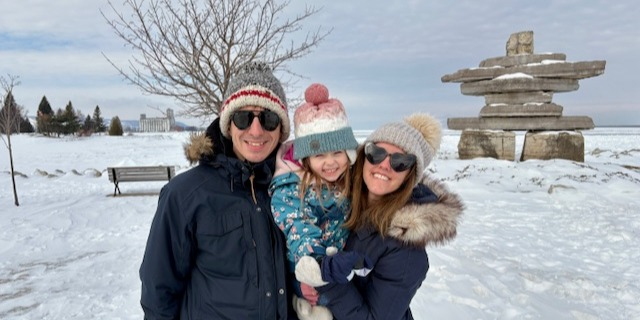
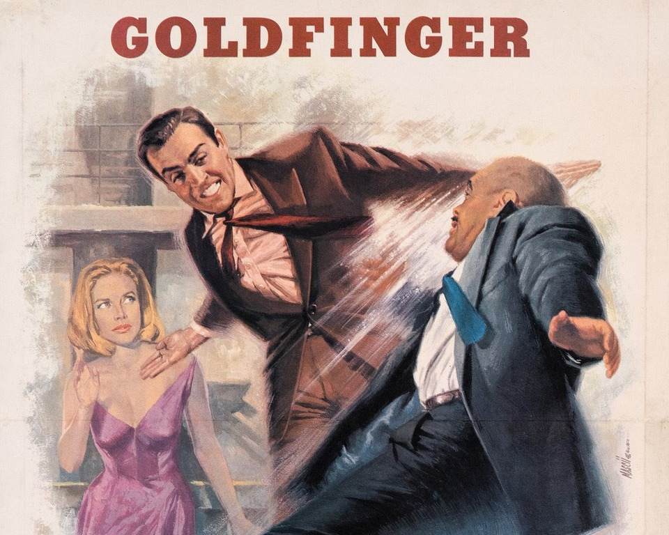

Family
The most important thing in my life is my family. I live with my beautiful wife, Shannon, and our 4 year old daughter in Toronto, CA. I grew up in Connecticut, but since 2021 I've been happily growing roots as a permanent resident of Canada. We love travel, music, and discovering local spots such as playgrounds and breweries.
My parents live in North Carolina and are avid golfers. My sister is also in North Carolina and teaches music. My inlaws live in Toronto and brother-in-law lives with his wife and children in Czech Republic.
James Bond
As far back as I can remember, I've always loved James Bond. As a kid, my dad and I watched the classic Sean Connery and Roger Moore films together. Since 1997's Tomorrow Never Dies, I've seen every film in the theatre, many on opening night. While I appreciate all Bond actors for their unique characters, my favorite is Daniel Craig for his gritty, human portrayal of the original Ian Fleming literary character.
Books
I consider myself an avid reader and have an annual goal for reading 25 books. I don't reach the goal every year but certainly aspire to! My favorite genre is spy fiction but I try to keep my intake balanced across genre, fiction/nonfiction, author voices, and subject matter. Here are some of my favorite books I've read in recent years -
- Slow Horses Series, Mick Herron
- Sideways Series, Rex Pickett
- No Country for Old Men, Cormack McCarthy
- The Honorable Schoolboy, John Le Carre
- A Small Town in Germany, John Le Carre
- All the Light We Cannot See, Anthony Doerr
- Anne Frank, A Diary of a Young Girl
- Killers of the Flower Moon, David Grann
- The Life and Times of the Thunderbolt Kid, Bill Bryson
- Balkan Ghosts, Robert D Kaplan